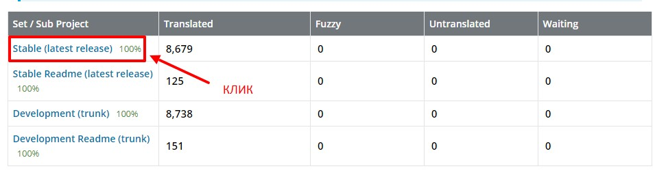

1 В поиске плагинов вводим e-commerce и нам надо найти вот такой плагин
2 Жмем кнопку установить, а затем жмем активировать.
3 После того как мы активировали плагин, у нас откроется мастер конфигурации плагина состоящий из 5 шагов
4 Первый шаг - это необходимо указать регистрационные данные, страна город и т.д.
5 Второй шаг - это необходимо указать в какой отрасли будет работать магазин (одежда, электроника, еда, мебель и т.д.) Ставим галочки в соответствии с направлением магазина. Если предложенные отрасли нам не подходят ставим последний чекбокс и описываем сами свою отрасль
6 Третий шаг - это необходимо указать чем мы будем торговать (физический товар или загрузки (цифровой товар))
Что за платные опции. К примеру это кастомизация продукта, т.е. например показывать товар в разных цветах и т.д.
7 Четвертый шаг - это необходимо указать сколько товаров должно отображаться и продаете ли вы свой продукт на других площадках
8 Пятый шаг - это необходимо выбрать тему нашего магазина
9 Далее нам предложат установить некое расширение. отказываемся.
После установки почему-то плагин был на англицском языке. Как его русифицировать
1 заходим на страничку КЛИК
2 Ищем в таблице RUSSIA и кликаем по ней
3 Далее кликаем по ссылке последней страбильной версии
4 Крутим в самый низ страницы до выпадающего списка. Нам нужен Machine Object Message Catalog (.mo), после чего жмем export
5 Скачается файлик. Далее идем по следующему пути \wp-content\languages. В папке languages создаем папку woocommerce/ Вот во внутрь этой папки и помещаем скаченный файл/ Все что нам остается это переименовать файл. Он должен называться вот так: woocommerce-ru_RU.mo